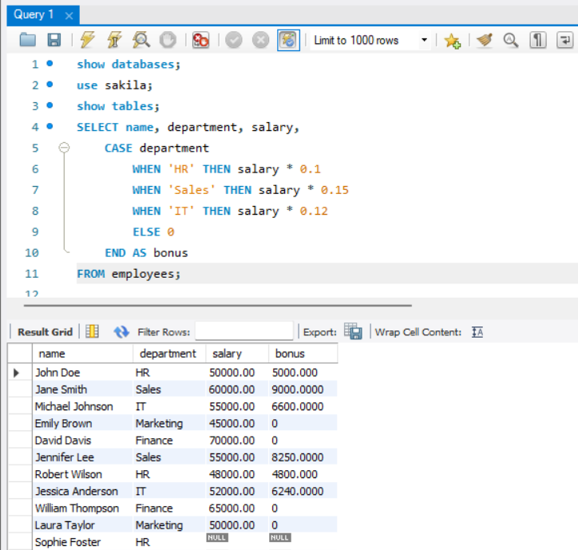

CASE STATEMENT
Contents
CASE STATEMENT¶
What is CASE statement?¶
The CASE statement in SQL is a conditional statement that allows you to perform different actions based on specified conditions. It provides a way to control the flow of the query and perform conditional logic.
How is CASE statement used?¶
The general syntax of the CASE statement is as follows:
CASE
WHEN condition1 THEN result1
WHEN condition2 THEN result2
...
ELSE result
END
Here’s an example to demonstrate the usage of the CASE statement:
Consider a table called “employees” with columns “name” and “salary”. We want to categorize employees into different salary ranges based on their salary values.
SELECT name, salary,
CASE
WHEN salary < 50000 THEN 'Low Salary'
WHEN salary >= 50000 AND salary < 80000 THEN 'Medium Salary'
ELSE 'High Salary'
END AS salary_category
FROM employees;
In this example, we select the “name” and “salary” columns from the “employees” table. The CASE statement is used to check the salary value for each employee and assign a corresponding category based on the specified conditions. If the salary is less than 50000, it is categorized as ‘Low Salary’. If the salary is between 50000 and 80000, it is categorized as ‘Medium Salary’. For any other salary values, it is categorized as ‘High Salary’. The result set will include the employee name, salary, and the assigned salary category.
How does CASE statement work?¶
Here’s how the CASE statement works:
The CASE statement evaluates the specified conditions one by one.
If a condition evaluates to true, the corresponding result expression is returned.
If none of the conditions evaluate to true, the result expression in the ELSE clause is returned.
The CASE statement can be used in different parts of a query, such as in the SELECT, WHERE, and ORDER BY clauses.
Here’s a simple example to illustrate how the CASE statement works:
Consider a table called “employees” with columns “name”, “department” and “salary”. We want to compute bonus amount based on various conditions.
SELECT name, department, salary,
CASE department
WHEN 'HR' THEN salary * 0.1
WHEN 'Sales' THEN salary * 0.15
WHEN 'IT' THEN salary * 0.12
ELSE 0
END AS bonus
FROM employees;
In this example, the CASE statement computes the bonus amount based on the department of each employee. It multiplies the salary by a specific percentage for each department and assigns the result as the bonus.
The CASE statement provides a flexible way to perform conditional operations and derive computed values based on specific conditions in SQL queries.

Exercise¶
Theory Questions:¶
What is the purpose of the CASE statement in SQL, and how does it differ from traditional IF-ELSE statements in programming languages?
What is the role of the ELSE clause in a CASE statement? When is it executed, and can it be omitted? Explain with an example.
Coding Questions:¶
Table for questions :
CREATE TABLE vehicles (
id INT PRIMARY KEY,
make VARCHAR(50),
model VARCHAR(50),
year INT,
color VARCHAR(30),
price DECIMAL(10, 2),
type VARCHAR(30)
);
INSERT INTO vehicles (id, make, model, year, color, price, type) VALUES
(1, 'Toyota', 'Corolla', 2018, 'Red', 20000.00, 'Sedan'),
(2, 'Ford', 'Mustang', 2020, 'Blue', 35000.00, 'Coupe'),
(3, 'Chevrolet', 'Silverado', 2019, 'Black', 45000.00, 'Truck'),
(4, 'Tesla', 'Model 3', 2021, 'White', 50000.00, 'Electric'),
(5, 'Honda', 'Civic', 2017, 'Grey', 18000.00, 'Sedan'),
(6, 'BMW', 'X5', 2022, 'Black', 60000.00, 'SUV'),
(7, 'Mercedes', 'C300', 2021, 'White', 55000.00, 'Sedan'),
(8, 'Audi', 'A4', 2018, 'Blue', 28000.00, 'Sedan'),
(9, 'Toyota', 'RAV4', 2020, 'Silver', 30000.00, 'SUV'),
(10, 'Ford', 'F-150', 2019, 'Red', 40000.00, 'Truck');
Q. Write a query to display the make, model, and a new column price_category that classifies each vehicle as ‘Economy’, ‘Premium’, or ‘Luxury’ based on the price (<25000 as ‘Economy’, between 25000 and 50000 as ‘Premium’, and >50000 as ‘Luxury’).
Q. Create a query to list the make, model, and a new column age_group categorizing vehicles as ‘New’ (year >= 2020), ‘Recent’ (year between 2017 and 2019), or ‘Older’ (year < 2017).
Q. Display the make, model, and a new column color_description using a CASE statement to replace color names with ‘Light’, ‘Dark’, or ‘Neutral’ based on the vehicle’s color (‘White’ and ‘Silver’ as ‘Light’, ‘Black’ as ‘Dark’, others as ‘Neutral’).
Q. Write a query to show the make, model, and a column body_style that converts ‘Sedan’ and ‘Coupe’ to ‘Passenger’, ‘SUV’ and ‘Truck’ to ‘Utility’, and ‘Electric’ remains the same.
Q. Assuming all non-electric vehicles use Gasoline, create a query to display make, model, and a new column fuel_type where ‘Electric’ vehicles are listed as ‘Electric’ and others as ‘Gasoline’.
Q. List make, model, and a column price_range indicating if the price is ‘Below 25k’, ‘25k to 50k’, or ‘Above 50k’.
Q. Assuming a 5-year warranty from the year of manufacture, write a query to show make, model, and a column warranty_status as ‘In Warranty’ or ‘Out of Warranty’ based on the year.
Q. Display the make, model, and a new column size_category classifying ‘Sedan’, ‘Coupe’, and ‘Electric’ as ‘Small’, ‘SUV’ as ‘Medium’, and ‘Truck’ as ‘Large’.
Q. Create a query to show make, model, and a column popularity where ‘Black’ and ‘White’ vehicles are ‘Popular’, and others are ‘Standard’.
Q. Display the make, model, and a new column year_class that classifies vehicles as ‘Vintage’ for years before 2000, ‘Modern’ for years between 2000 and 2015, and ‘Current’ for years after 2015.
Q. Write a query to show make, model, and a column highlight that marks ‘Electric’ vehicles as ‘Eco-Friendly’ and others with ‘Conventional’.
Q. Display make, model, and a new column luxury_brand where ‘BMW’, ‘Mercedes’, and ‘Audi’ are flagged as ‘Yes’, and other makes as ‘No’.
Q. List make, model, and a column sporty where ‘Coupe’ and ‘Mustang’ models are marked as ‘Sporty’ and others as ‘Regular’.
Q. Create a query to display make, model, and a new column origin classifying ‘Ford’ and ‘Chevrolet’ as ‘Domestic’ and others as ‘Imported’.
Q. Assuming ‘Sedan’, ‘Coupe’, and ‘Electric’ types are ‘Fuel Efficient’, and others are not, write a query to show make, model, and a column fuel_efficiency as ‘Yes’ for efficient vehicles and ‘No’ for others.
Q. Determine the suitability of the vehicle color for hot climates (‘Suitable’ for light colors, ‘Unsuitable’ for dark colors).
Q. Classify vehicles as ‘Urban’ if they are smaller cars or ‘Rural’ if they are larger vehicles or trucks.
Q. Categorize vehicles based on their model year as ‘Experienced’ for older models and ‘Novice’ for newer models.(year < 2015 , ‘Experienced’)
Q. Determine the primary purpose of the vehicle (‘Daily Use’, ‘Work’, ‘Leisure’) based on type.
Q. Classify vehicles as ‘High Maintenance’ for luxury brands and older vehicles, and ‘Low Maintenance’ for newer, non-luxury brands.